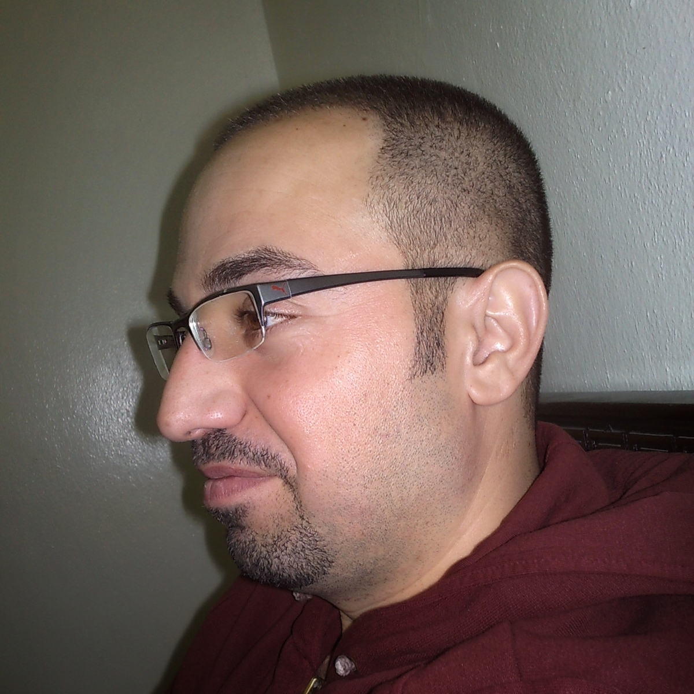

Hello

I’m Hani Badran
- Statenjachtstraat 16 ,1034 EC - Amsterdam
- 0634591111
- badran1@gmail.com
Education
- 2018 Orientatietraject ‘Statushouders voor de Klas’, deelnemer, HvA.
- 2013 ICDL International Computer Driving License.
- 2010 Bachelor of Physical and Chemical Sciences.
Work experience
- 2019 Hyperion Lyceum (Amterdam/ volunteer work)
- 2018 Vinse School (Amterdam/volunteer work)
- 2013 Dubai Institute, mathematics teacher - Damascus
- 2009 Alriada Institute, mathematics teacher - Damascus
I loved the world of digitization and computerization and since its entering to my country. This has increased significantly since I arrived in Europe due to the high quality of electronic services.